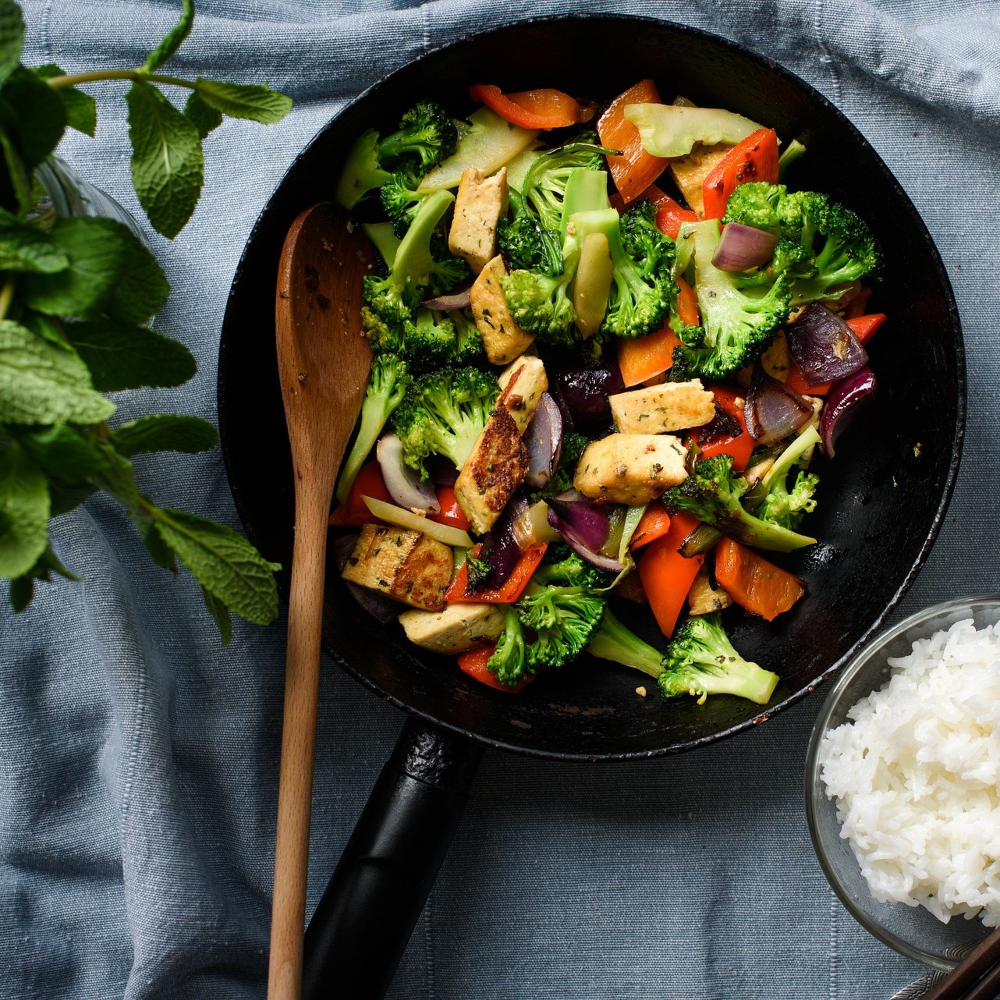

| Stir-fry cu tofu | |||
|---|---|---|---|
|
Timp de preparare: 30 minute |
 Nivel: Incepator |
||
|

|
||
|
Pasi de preparare: Informatii nutritionale/portie: Calorii: 152 kcal, Carbohidrați: 27 g, proteine: 5 g, grăsimi: 10 g, grăsimi saturate: 2 g, sodiu: 643 mg, potasiu: 489 mg, fibre: 4 g, zahăr: 12 g, vitamina A: 4701 UI, vitamina C: 110mg, calciu: 45 mg , Fier: 2 mg |
|||